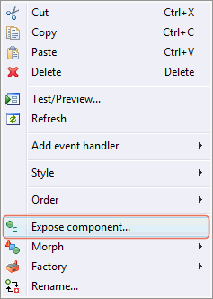
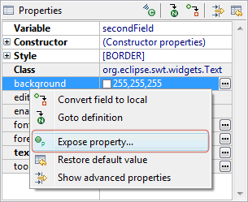

The tool supports the creation of custom Composites (SWT) and JPanels (Swing). This is an ideal way to create custom, reusable components. The following features are supported:
-
Embed any Composite of JPanel subclass in another window
-
All widgets defined in the Composite / JPanel are visible in the window they are used
-
Access any widget exposed via public accessors
-
Access exposed custom properties
-
Exposed widgets appear in tree with the "exposed" decorator
The following is an example of a custom Composites that is then used in a window. The Composite uses a GridLayout and has two Labels, two Text widgets, a Button and an inner Composite widget.
The inner Composite widget has been exposed as a public component using the Expose Component command. Expose Component converts a component to a field and adds a public accessor for it. Finally, the background color property of the first Text widget and the text property of the Button have been exposed as a public properties of the Composite using the Expose Property command. Expose Property adds a pair of accessors for getting and setting the desired property of the target widget.
 
import org.eclipse.swt.SWT;
import org.eclipse.swt.graphics.Color;
import org.eclipse.swt.layout.*;
import org.eclipse.swt.widgets.*;
public class CustomComposite extends Composite {
private Button browseButton;
private Composite composite;
private Text secondField;
private Text firstField; +
public CustomComposite(Composite parent, int style) {
super(parent, style);
createContents();
}
public void createContents() {
final GridLayout gridLayout = new GridLayout();
gridLayout.numColumns = 3;
setLayout(gridLayout);
final Label firstFieldLabel = new Label(this, SWT.NONE);
firstFieldLabel.setText("First Field");
firstField = new Text(this, SWT.BORDER);
final GridData gd_firstField = new GridData(SWT.FILL, SWT.CENTER, true, false);
firstField.setLayoutData(gd_firstField);
browseButton = new Button(this, SWT.NONE);
browseButton.setLayoutData(new GridData(SWT.FILL, SWT.CENTER, false, false));
browseButton.setText("Browse...");
final Label secondFieldLabel = new Label(this, SWT.NONE);
secondFieldLabel.setText("Second Field");
secondField = new Text(this, SWT.BORDER);
final GridData gd_secondField = new GridData(SWT.FILL, SWT.CENTER, true, false, 2, 1);
secondField.setLayoutData(gd_secondField);
composite = new Composite(this, SWT._NONE);
composite.setLayoutData(new GridData(SWT.FILL, SWT.FILL, false, true, 3, 1));
}
public Composite getComposite() {
return composite;
}
public String getBrowseButtonText() {
return browseButton.getText();
}
public void setBrowseButtonText(String text) {
browseButton.setText(text);
}
public Color getFirstFieldBackground() {
return firstField.getBackground();
}
public void setFirstFieldBackground(Color background) {
firstField.setBackground(background);
}
}The window uses a FillLayout and embeds the custom Composite. The
window sets the inner Composite’s layout manager via its accessor
exposed in the custom Composite and then adds several new widgets to
the inner Composite. Finally, it overrides the background color for
the first Text widget and the text setting of the Button using the
accessors defined in the embedded Composite.
Note that the exposed inner Composite from the custom Composite
shows up in the component tree with a small
overlay icon. The other widgets defined in the embedded Composite do
not show up in the tree because they are private to that Composite.
import org.eclipse.swt.SWT;
import org.eclipse.swt.widgets.*;
import org.eclipse.swt.layout.*;
import org.eclipse.swt.layout.GridLayout; +
public class WindowUsingComposite {
protected Shell shell;
private List list;
private Text thirdField;
private Text fourthField;
public static void main(String[] args) {
try {
WindowUsingComposite window = new WindowUsingComposite();
window.open();
} catch (Exception e) {
e.printStackTrace();
}
}
public void open() {
final Display display = Display.getDefault();
createContents();
shell.open();
shell.layout();
while (!shell.isDisposed()) {
if (!display.readAndDispatch()) {
display.sleep();
}
}
}
protected void createContents() {
shell = new Shell(SWT.SHELL_TRIM);
shell.setLayout(*new* FillLayout(SWT.HORIZONTAL));
shell.setSize(450, 384);
shell.setText("Window Using Composite");
CustomComposite customComposite = new CustomComposite(shell,SWT.NONE);
customComposite.setBrowseButtonText("Find...");
customComposite.setFirstFieldBackground(shell.getDisplay().getSystemColor(SWT.COLOR_YELLOW));
final GridLayout gridLayout = new GridLayout();
gridLayout.numColumns = 2;
customComposite.getComposite().setLayout(gridLayout);
final Label thirdFieldLabel = new Label(customComposite.getComposite(), SWT.NONE);
thirdFieldLabel.setText("Third Field");
thirdField = new Text(customComposite.getComposite(), SWT.BORDER);
final* GridData gd_thirdField = new GridData(SWT.FILL, SWT.CENTER, true, false);
thirdField.setLayoutData(gd_thirdField);
final Label fourthFieldLabel = new Label(customComposite.getComposite(), SWT.NONE);
fourthFieldLabel.setText("Fourth Field");
fourthField = new Text(customComposite.getComposite(), SWT.BORDER);
final GridData gd_fourthField = new GridData(SWT.FILL,SWT.CENTER, true, false);
fourthField.setLayoutData(gd_fourthField);
list = new List(customComposite.getComposite(), SWT.BORDER);
list.setItems(new String[] {"First Item", "Second Item"});
list.setLayoutData(new GridData(SWT.FILL, SWT.FILL, false,true, 2, 1));
}
}